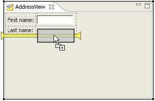

You can use the GridLayout with SWT containers to arrange widgets
in a grid arrangement.
The SWT GridLayout layout manager arranges widgets in rows and
columns. The visual editor provides feedback as you add widgets to the grid.
When you add a widget, you can add it to an empty grid cell, or you can force
the grid to add a new row or column and place the widget in a new cell. When
you add new rows or columns, "empty" cells are created as needed. Because
GridLayout requires each cell to contain a widget, a filler label with no
text is added the empty cells actually include a filler label with no text.
The
visual editor displays a grid border and placement indicators to help you
determine where widgets are located within the grid and where a widget will
be placed in relation to other widgets. A yellow bar that spans the entire
width or height of the grid indicates that an entire row or column will be
added. A yellow bar that spans a single row or column indicates that only
that row or column will be affected:

For more help, read the following sections
of this topic:
 toolbar button. The Customize Layout dialog opens.
toolbar button. The Customize Layout dialog opens.